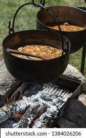

Old Nordic Meat Soup

The Soup That Fed the Hoard.
Soup has been around since before dogs were mans
best friend. I feel like this dish is a good dish
to make unique, add or remove ingredients, make it
thick and creamy or thin and light. Your very own
Viking soup!
But the purpose of this article is to give you
a recipe that brings the tast as if you were eating
in the Great Hall with kin folk and horns of mead.
I hope you enjoy this timeless meal and turn it into
your own secret family recipe!
Ingredients
- 8-12 cups water
- 1/2 kg meat (pork, beef, lamb, chicken, ect)
- salt
- 3-5 cups of herb such as the top shoots of stinging nettles, young dandelion leaves,
wild chervil, cress, wild marjorum, dill, plantain, angelica, wild onions, caraway greenery,
thyme, or whatever the season has to offer.
Instructions
- Put the meat in the kettle.
- Pour water over the meat so it is covered and put the kettle on the
fire. In order that the heat is spread evenly the kettle must be turned about every 5-10
minutes.
- When the water boils it should cook for about one hour. It may be necessary to add
more water so the meat is always covered with water
- While the meat is cooking wash and chop the herbs. They will go in the soup when it is ready.
When the meat is tender take it out and slice it to a size fit for a spoon and return it to the
soup. Add salt as desired, then it is ready to be served. It can be served with flatbread.
- f you want a more filling soup you can add soaked wheat kernels, thick flour... or the soup
can be smoothed out with pea flour (yellow peas grinded on a stone).